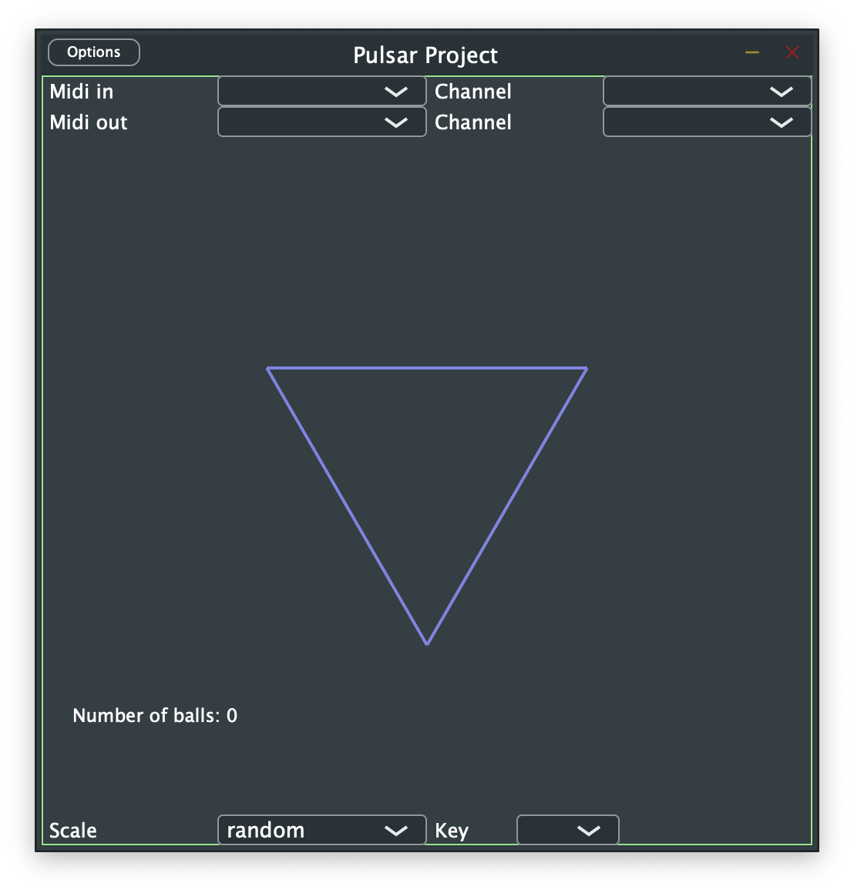

I always enjoyed the Tombola Sequencer on the Teenage Engineering OP-1
I thought it would be nice to have a version which didn't require you to break the bank and buy an OP-1. I did a bit of research beforehand and didn't find many examples of people implementing it for mac / windows / linux (Though, saying that, there is Laundromat which looks quite nice, but admittedly I didn't try it out because I wanted to go through the coding exercise myself.)
So, anyway, what is it? Well, its a random sequencer based on polygon worlds and balls bouncing around inside that world colliding and sending out midi notes - if you have a synth or a DAW listening on the right midi channel, you might just hear some sound.
Each ball in the world is associated with a specific MIDI note and when it collides with the edges of the world or any other balls that note will play. The range of notes can be played in via a MIDI or randomly assigned (see below)
A very early version can be downloaded here.
Note 1: this has only been tested on macOS at this stage - so may not work on Windows / Linux (but maybe it will!)
Note 2: I don't have a personal Apple developer account and so, unfortunately, the zip is not signed / notarised. This means
All of the dependencies are bundled into the application - so there's no need to install any extra software
It is simply a standalone application at the moment (though really... it should be a VST...), so after unzipping & double clicking the icon you should be presented with the following:
At the top are dropdown boxes to control the Midi In / Out ports and channels
If you are working entirely within the box, with virtual / software instruments you probably need some specific routing software. For macOS I recommend looking into the IAC Driver to handle this.
Once the MIDI is set up as desired with a synth / DAW, the first thing to do is to check you get some sound out so just click randomly a couple of times inside the polygon and you should hear something each time a collision occurs.
Pressing the "h" key will bring up a small help menu describing further controls to manipulate the universe - such as rotation, edge separation etc
Keys 3-9 will generate a new world with a polygon with sides corresponding to the number you pressed (note: 9 crashes the application currently...)
When clicking inside the polygon notes are randomly generated across the whole MIDI note range, if you wish to constrain the values to a particular scale and / or key, use the drop down menus at the bottom. This will lead to more harmonious results.
Here are a few quick video demonstrations of how to use it using soft synths:
The first example shows its usage with a standalone soft synth (Arturia's Pigments in this case). Note the MIDI routing settings in both Pulsar and Pigments
This example shows how to set up a MIDI channel with a VST loaded in Ableton, again, notice the MIDI routing settings